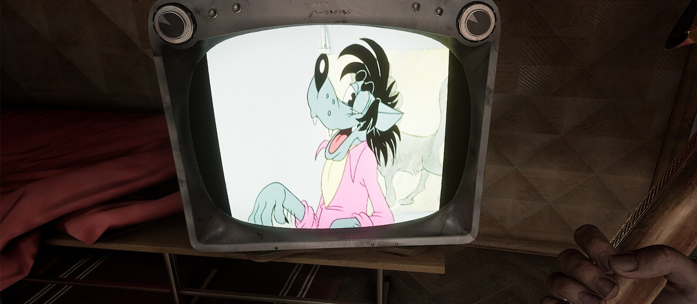

В цифровом сервисе Steam стала доступна Atomic Heart, в результате чего игра уже получила первые отзывы от геймеров. Так, к примеру, сейчас рейтинг проекта составляет 85%.
Об Atomic heart
Геймеры в Steam уже оценили Atomic Heart и рассказали, что они о ней думают — собрали первые реакции и отзывы
21.02.2023

Atomic Heart представляет собой шутер от первого лица с элементами RPG, действие которого разворачивается в альтернативном СССР. Сеттинг дополнен фантастическими элементами. К примеру, в игре есть роботы.